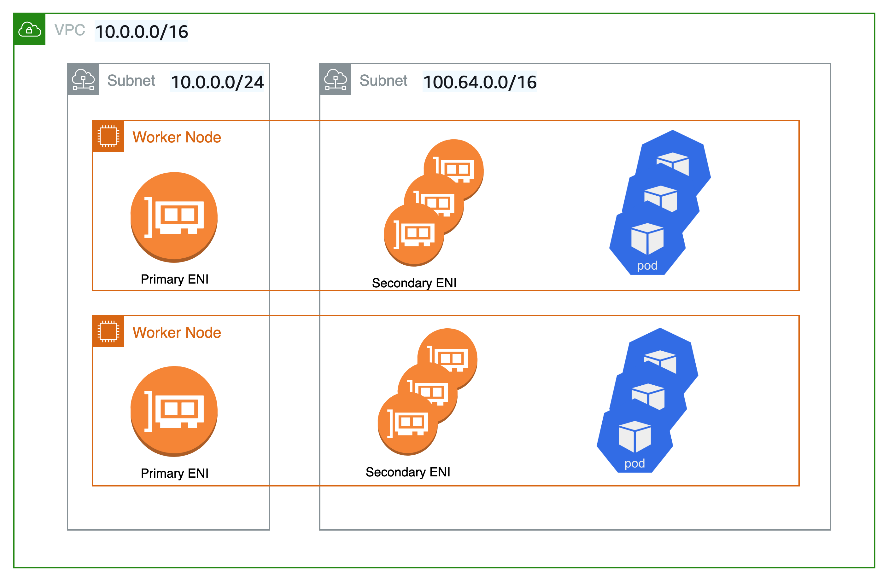

自定义网络¶
默认情况下，Amazon VPC CNI 将从主子网中选择一个 IP 地址分配给 Pod。主子网是主网络接口所连接的子网 CIDR，通常是节点/主机所在的子网。
如果子网 CIDR 太小，CNI 可能无法获取足够的辅助 IP 地址分配给 Pod。这是 EKS IPv4 集群的一个常见挑战。
自定义网络是解决这个问题的一种解决方案。
自定义网络通过从辅助 VPC 地址空间 (CIDR) 分配节点和 Pod IP 来解决 IP 耗尽问题。自定义网络支持 ENIConfig 自定义资源。ENIConfig 包括一个备用子网 CIDR 范围 (从辅助 VPC CIDR 中划分)，以及 Pod 将属于的安全组。启用自定义网络后，VPC CNI 在 ENIConfig 中定义的子网中创建辅助网络接口。CNI 从 ENIConfig CRD 中定义的 CIDR 范围为 Pod 分配 IP 地址。
由于主网络接口不被自定义网络使用，因此您可以在节点上运行的 Pod 数量会降低。主机网络 Pod 继续使用分配给主网络接口的 IP 地址。此外，主网络接口用于处理源网络转换并路由 Pod 流量到节点外部。
示例配置¶
虽然自定义网络将接受有效的 VPC 范围作为辅助 CIDR 范围，但我们建议您使用来自 CG-NAT 空间的 CIDR (/16)，即 100.64.0.0/10 或 198.19.0.0/16，因为这些范围在企业环境中不太可能被使用，而不是其他 RFC1918 范围。有关您可以与 VPC 一起使用的允许和限制的 CIDR 块关联的更多信息，请参阅 VPC 文档中 VPC 和子网大小调整部分的 IPv4 CIDR 块关联限制。
如下图所示，工作节点的主弹性网络接口 (ENI) 仍使用主 VPC CIDR 范围 (在本例中为 10.0.0.0/16)，但辅助网络接口使用辅助 VPC CIDR 范围 (在本例中为 100.64.0.0/16)。现在，为了让 Pod 使用 100.64.0.0/16 CIDR 范围，您必须配置 CNI 插件使用自定义网络。您可以按照此处记录的步骤进行操作。

如果您希望 CNI 使用自定义网络，请设置 AWS_VPC_K8S_CNI_CUSTOM_NETWORK_CFG 环境变量为 true。
当 AWS_VPC_K8S_CNI_CUSTOM_NETWORK_CFG=true 时，CNI 将从 ENIConfig 中定义的子网分配 Pod IP 地址。ENIConfig 自定义资源用于定义将调度 Pod 的子网。
apiVersion : crd.k8s.amazonaws.com/v1alpha1
kind : ENIConfig
metadata:
name: us-west-2a
spec:
securityGroups:
- sg-0dff111a1d11c1c11
subnet: subnet-011b111c1f11fdf11
创建 ENIconfig 自定义资源后，您需要创建新的工作节点并排空现有节点。现有工作节点和 Pod 将不受影响。
建议¶
何时使用自定义网络¶
如果您正在处理 IPv4 耗尽且暂时无法使用 IPv6，我们建议您考虑使用自定义网络。Amazon EKS 对 RFC6598 空间的支持使您能够扩展 Pod 以超越 RFC1918 地址耗尽的挑战。请考虑与自定义网络一起使用前缀委派来增加节点上的 Pod 密度。
如果您有在不同网络上运行 Pod 并具有不同安全组要求的安全需求，您可能会考虑使用自定义网络。启用自定义网络后，Pod 使用的子网或安全组与节点的主网络接口不同，如 ENIConfig 中所定义。
自定义网络确实是部署多个 EKS 集群和应用程序以连接本地数据中心服务的理想选择。您可以增加 EKS 在 VPC 中可访问的私有地址 (RFC1918) 数量，用于诸如 Amazon Elastic Load Balancing 和 NAT-GW 等服务，同时在多个集群中使用不可路由的 CG-NAT 空间来部署您的 Pod。结合 Transit Gateway 和共享服务 VPC (包括跨多个可用区的 NAT 网关以实现高可用性)的自定义网络，可以为您提供可扩展和可预测的流量流。这篇博客文章描述了一种架构模式，这是将 EKS Pod 连接到数据中心网络的最推荐方式之一。
何时避免使用自定义网络¶
准备实施 IPv6¶
自定义网络可以缓解 IP 耗尽问题，但需要额外的操作开销。如果您当前正在部署双栈 (IPv4/IPv6) VPC 或您的计划包括 IPv6 支持，我们建议您实施 IPv6 集群。您可以设置 IPv6 EKS 集群并迁移您的应用程序。在 IPv6 EKS 集群中，Kubernetes 和 Pod 都获得 IPv6 地址，并且可以与 IPv4 和 IPv6 端点进行通信。请查看运行 IPv6 EKS 集群的最佳实践。
耗尽 CG-NAT 空间¶
此外，如果您当前正在使用来自 CG-NAT 空间的 CIDR 或无法将辅助 CIDR 与集群 VPC 关联，您可能需要探索其他选项，例如使用替代 CNI。我们强烈建议您获得商业支持或拥有调试和向开源 CNI 插件项目提交补丁的内部知识。请参阅替代 CNI 插件用户指南以了解更多详细信息。
使用私有 NAT 网关¶
Amazon VPC 现在提供私有 NAT 网关功能。Amazon 的私有 NAT 网关使私有子网中的实例能够连接到具有重叠 CIDR 的其他 VPC 和本地网络。考虑使用本博客文章中描述的方法来使用私有 NAT 网关来解决由于重叠 CIDR 而导致的 EKS 工作负载通信问题，这是我们客户表达的一个重大疑虑。自定义网络无法单独解决重叠 CIDR 的困难，并且增加了配置挑战。
此博客文章实现中使用的网络架构遵循 Amazon VPC 文档中启用重叠网络之间的通信下的建议。如本博客文章所示，您可以将私有 NAT 网关的使用与 RFC6598 地址结合起来，以管理客户的私有 IP 耗尽问题。EKS 集群、工作节点部署在不可路由的 100.64.0.0/16 VPC 辅助 CIDR 范围内，而私有 NAT 网关、NAT 网关则部署在可路由的 RFC1918 CIDR 范围内。该博客解释了如何使用 Transit Gateway 连接 VPC 以促进跨具有重叠不可路由 CIDR 范围的 VPC 的通信。对于 VPC 中不可路由地址范围内的 EKS 资源需要与没有重叠地址范围的其他 VPC 通信的用例，客户可以选择使用 VPC 对等连接来互连这些 VPC。这种方法可能会带来潜在的成本节约，因为所有在可用区内通过 VPC 对等连接传输的数据现在都是免费的。

节点和 Pod 的唯一网络¶
如果您需要将节点和 Pod 隔离到特定网络以满足安全需求，我们建议您将节点和 Pod 部署到来自较大辅助 CIDR 块 (例如 100.64.0.0/8) 的子网。在您的 VPC 中安装新的 CIDR 后，您可以使用辅助 CIDR 部署另一个节点组，并排空原始节点以自动将 Pod 重新部署到新的工作节点。有关如何实施的更多信息，请参阅此博客文章。
下图所示的设置中未使用自定义网络。相反，Kubernetes 工作节点部署在来自 VPC 辅助 VPC CIDR 范围 (如 100.64.0.0/10) 的子网上。您可以保持 EKS 集群运行 (控制平面将保留在原始子网/s 上)，但节点和 Pod 将被移动到辅助子网/s。这是另一种缓解 VPC 中 IP 耗尽风险的非常规方法。我们建议在重新部署 Pod 到新工作节点之前排空旧节点。

使用可用区标签自动化配置¶
您可以使 Kubernetes 自动应用与工作节点可用区 (AZ) 对应的 ENIConfig。
Kubernetes 会自动将标签 topology.kubernetes.io/zone 添加到您的工作节点。当您每个可用区只有一个辅助子网 (备用 CIDR) 时，Amazon EKS 建议将可用区用作 ENI 配置名称。请注意，标签 failure-domain.beta.kubernetes.io/zone 已被弃用，并被标签 topology.kubernetes.io/zone 取代。
- 将
name字段设置为 VPC 的可用区。 - 使用以下命令启用自动配置：
如果您每个可用区有多个辅助子网，您需要创建一个特定的 ENI_CONFIG_LABEL_DEF。您可以考虑将 ENI_CONFIG_LABEL_DEF 配置为 k8s.amazonaws.com/eniConfig，并使用自定义 eniConfig 名称标记节点，例如 k8s.amazonaws.com/eniConfig=us-west-2a-subnet-1 和 k8s.amazonaws.com/eniConfig=us-west-2a-subnet-2。
配置辅助网络时替换 Pod¶
启用自定义网络不会修改现有节点。自定义网络是一种破坏性操作。我们建议在启用自定义网络后，不要滚动替换集群中的所有工作节点，而是更新 EKS 入门指南中的 AWS CloudFormation 模板，其中包含一个自定义资源，该资源调用 Lambda 函数来在工作节点配置之前使用环境变量更新 aws-node Daemonset 以启用自定义网络。
如果您在切换到自定义 CNI 网络功能之前集群中有任何节点正在运行 Pod，您应该隔离并排空节点以优雅地关闭 Pod 并终止节点。只有与 ENIConfig 标签或注释匹配的新节点才会使用自定义网络，因此在这些新节点上调度的 Pod 才能从辅助 CIDR 获取 IP 地址。
计算每个节点的最大 Pod 数量¶
由于节点的主网络接口不再用于分配 Pod IP 地址，因此您可以在给定 EC2 实例类型上运行的 Pod 数量会减少。为了解决这个限制，您可以与自定义网络一起使用前缀分配。使用前缀分配时，每个辅助 IP 将在辅助网络接口上替换为 /28 前缀。
考虑使用自定义网络时 m5.large 实例的最大 Pod 数量。
如果不使用前缀分配，您可以运行的最大 Pod 数量为 29
- ((3 个网络接口 - 1) * (每个网络接口 10 个辅助 IP - 1)) + 2 = 20
启用前缀附加会将 Pod 数量增加到 290。
- (((3 个网络接口 - 1) * ((每个网络接口 10 个辅助 IP - 1) * 16)) + 2 = 290
但是，我们建议将 max-pods 设置为 110 而不是 290，因为该实例的虚拟 CPU 数量相当小。对于较大的实例，EKS 建议将 max pods 值设置为 250。当使用较小实例类型 (例如 m5.large) 的前缀附加时，您可能会在耗尽实例的 CPU 和内存资源之前就耗尽其 IP 地址。
Info
当 CNI 前缀为网络接口分配 /28 前缀时，它必须是一个连续的 IP 地址块。如果生成前缀的子网高度分片，则前缀附加可能会失败。您可以通过为集群创建一个新的专用 VPC 或为前缀附加保留一组专用子网 CIDR 来缓解这种情况。有关此主题的更多信息，请访问子网 CIDR 保留。
识别现有 CG-NAT 空间使用情况¶
自定义网络可以缓解 IP 耗尽问题，但无法解决所有挑战。如果您已经在集群中使用 CG-NAT 空间，或者根本无法将辅助 CIDR 与集群 VPC 关联，我们建议您探索其他选项，如使用替代 CNI 或迁移到 IPv6 集群。